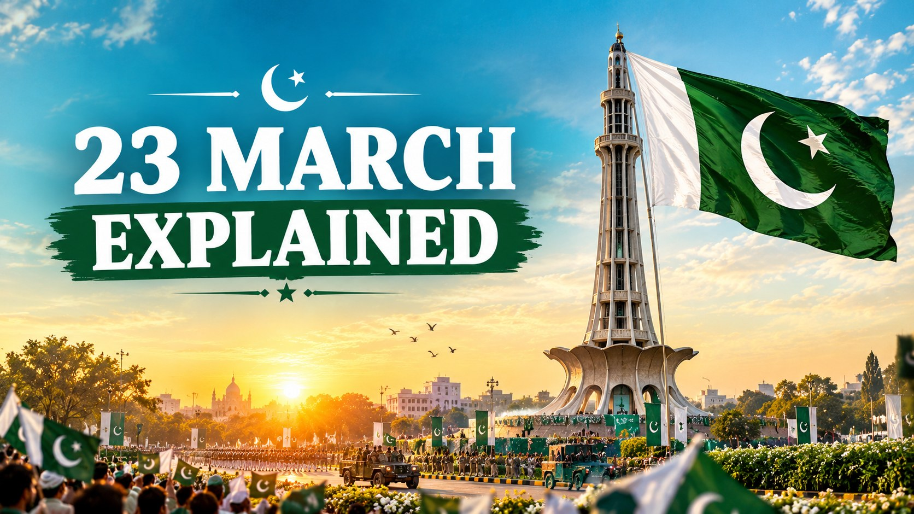

Pakistan Day 23 March: History, Significance & Lahore Resolution Explained
Published October 10, 2026 · Updated October 10, 2026 · By EventBuzz Team

Every year on 23 March, Pakistan pauses to remember the day an idea became a promise. Flags rise over schools and rooftops, the armed forces parade in the capital, and students retell the story of a gathering in Lahore that changed the map of the world. This guide explains that story in simple words: what happened on 23 March 1940, what the Lahore Resolution actually said, why the same date carries a second historic moment from 1956, and how the day is celebrated today. In 2027, Pakistan Day falls on Tuesday, March 23, 2027.
What Happened on 23 March 1940?
In March 1940, the All-India Muslim League held its annual session at Minto Park in Lahore, a large open ground beside the historic Badshahi Mosque. The session ran from March 22 to 24 and was presided over by Muhammad Ali Jinnah, the Quaid-e-Azam. Tens of thousands of people attended, and on 23 March the Bengal leader A. K. Fazlul Huq stood before the crowd and moved the resolution that would shape the future of the region. The resolution was adopted during the session and quickly became known as the Lahore Resolution; supporters later called it the Pakistan Resolution. The tower that stands on that ground today, Minar-e-Pakistan, was built to mark the exact spot where the demand was voiced.
The Lahore Resolution in Simple Words
Stripped of formal language, the resolution made a few clear points:
- The Muslims of the subcontinent were a separate nation, with their own religion, culture and way of life, and not merely a minority within one nation.
- No constitutional plan would be acceptable to them unless the Muslim-majority regions, in the north-west and the east, were grouped into independent states where Muslims could govern their own affairs.
- Minorities within those states, and Muslims living elsewhere, must receive proper safeguards for their religious, cultural and political rights.
Notice what the resolution did not contain: the word "Pakistan" does not appear in its text. The name came from public and press usage, and the demand was for independent states in the Muslim-majority zones rather than one drawn map. Seven years later, on 14 August 1947, that demand produced the independent state of Pakistan, which is why 23 March is remembered as the day the goal was first declared openly and unitedly.
23 March 1956: The First Constitution
The date earned a second layer of meaning sixteen years later. On 23 March 1956, Pakistan adopted its first constitution and formally became the Islamic Republic of Pakistan, completing the transition from a dominion to a republic with its own president. Because both milestones share 23 March, the day is celebrated both as the anniversary of the resolution that demanded Pakistan and as the day Pakistan defined itself under its own constitution.
How Pakistan Day Is Celebrated
The day begins with gun salutes at dawn, 31 guns in the capital Islamabad and 21 in the provincial capitals, followed by special prayers for the progress and prosperity of the country. The centrepiece is the Pakistan Day parade in Islamabad, where the armed forces march, military equipment is displayed and aircraft perform a flypast, attended by the president, the prime minister and guests from friendly countries. Flags are hoisted on public and private buildings, schools and colleges hold speeches, debates, tableaus and national song competitions, and television and radio broadcast special programmes retelling the 1940 story. Families visit monuments such as Minar-e-Pakistan in Lahore, and children carry small flags through streets decorated in green and white. To prepare your words for the day, our Pakistan Day quotes and slogans collection has famous sayings and ready lines for speeches and captions.
Why Pakistan Day Matters
Pakistan Day connects two kinds of gratitude: for the generation that imagined a homeland and organised peacefully to win it, and for the ongoing work of building it. The Lahore Resolution was not a battle but a decision, written, debated and adopted in the open, and that is the habit the day asks citizens to keep: unity, faith and discipline in daily life. For students especially, 23 March is a yearly reminder that nations are built first in the mind, as an idea people agree to stand behind together.
Frequently Asked Questions
Why is Pakistan Day celebrated on 23 March?
Because the Lahore Resolution was moved on 23 March 1940, formally demanding independent states for the Muslims of the subcontinent, and Pakistan's first constitution was also adopted on 23 March 1956.
Who moved the Lahore Resolution and who presided over the session?
The resolution was moved by A. K. Fazlul Huq, the leader from Bengal, at the All-India Muslim League session presided over by Muhammad Ali Jinnah at Minto Park, Lahore.
Where exactly was the Lahore Resolution passed?
At Minto Park in Lahore, now known as part of Greater Iqbal Park, where Minar-e-Pakistan stands today to mark the site of the 1940 session.
What happened on 23 March 1956?
Pakistan adopted its first constitution and became the Islamic Republic of Pakistan, so 23 March also marks the country's first Republic Day.
When is Pakistan Day in 2027, and is it a public holiday?
Pakistan Day 2027 falls on Tuesday, March 23, 2027, and it is a national public holiday with schools, offices and banks closed.
Conclusion
One date carries the whole journey: a resolution spoken in a Lahore park in 1940, a country born in 1947, and a constitution adopted in 1956. Whether you watch the parade, join a school ceremony or simply raise the flag at home, 23 March is the day to remember where Pakistan began and to renew the promise to build it well.
Pakistan Zindabad, today and every day.